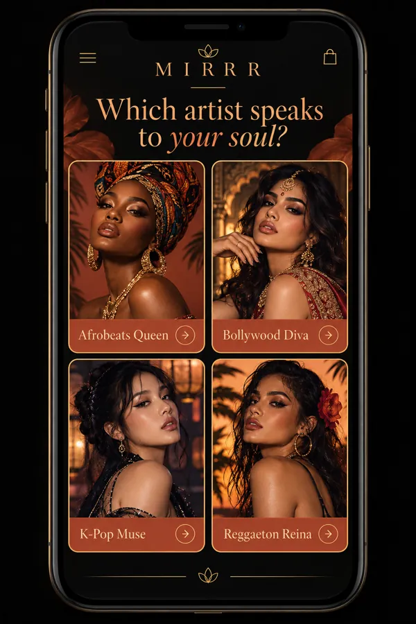
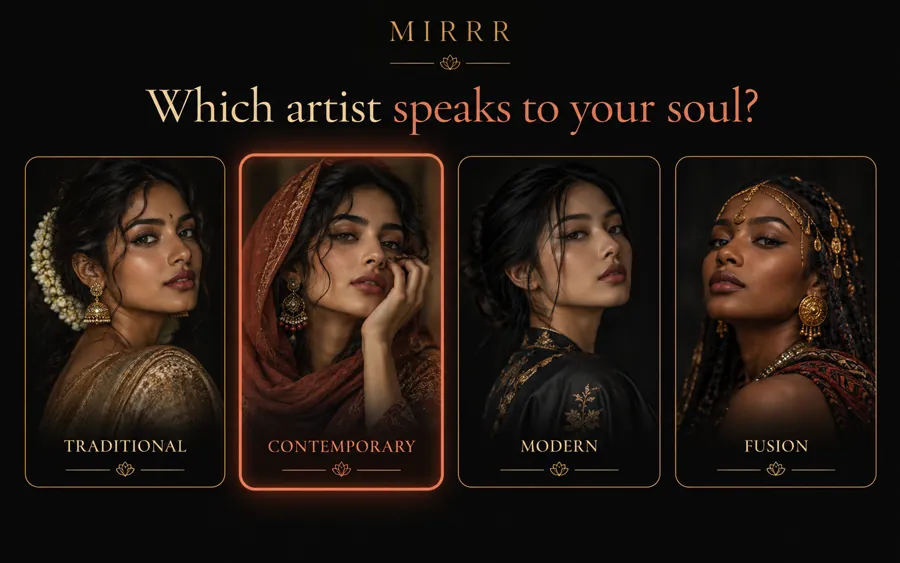
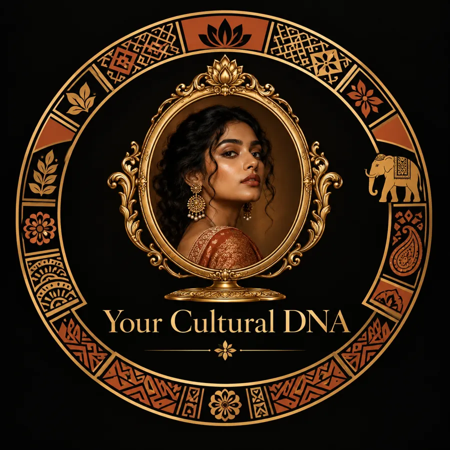
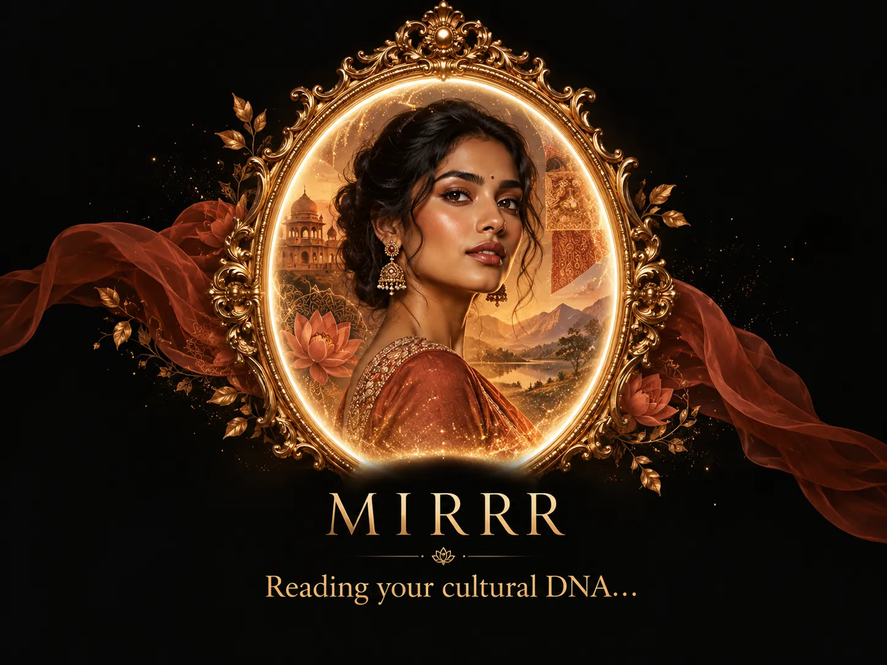
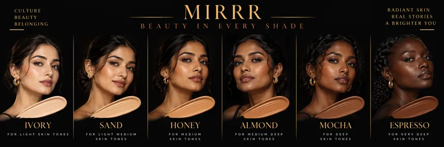
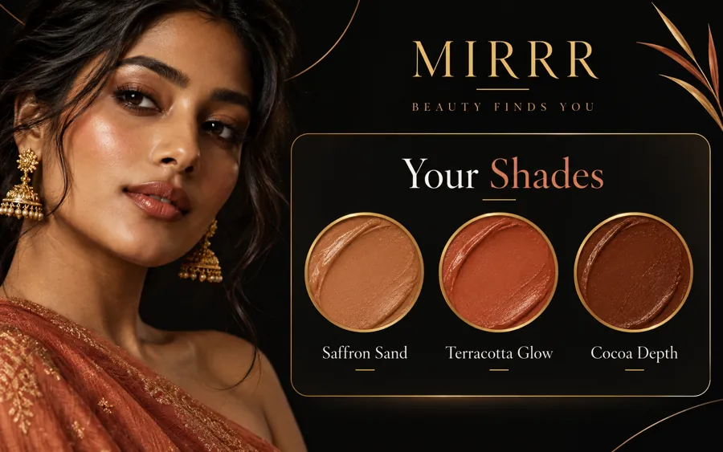

🌍 West African · Orí Shea · Afrobeats · Durbar Festival🌸 South Asian · Champi · Ubtan · Mehndi Bridal✨ Arab · Argan · Kohl · Eid Glam🌺 Caribbean · Coconut · Carnival · Jamaican Castor💃 Latina · Avocado · Cumbia · Día de los Muertos✨ East Asian · Rice Water · K-Beauty · Lunar New Year🌄 East African · Frankincense · Adumu · Timkat🌿 South African · Rooibos · Marula · Heritage Day👑 Black American · LOC Method · Vogue · Juneteenth🌍 West African · Orí Shea · Afrobeats · Durbar Festival🌸 South Asian · Champi · Ubtan · Mehndi Bridal✨ Arab · Argan · Kohl · Eid Glam🌺 Caribbean · Coconut · Carnival · Jamaican Castor💃 Latina · Avocado · Cumbia · Día de los Muertos✨ East Asian · Rice Water · K-Beauty · Lunar New Year🌄 East African · Frankincense · Adumu · Timkat🌿 South African · Rooibos · Marula · Heritage Day👑 Black American · LOC Method · Vogue · Juneteenth
Upload your photo, pick a look you love, and get a step-by-step transformation matched to your skin tone: face, brows, eyes, lips and hair. Built for the women mainstream beauty overlooks.
60-Second TransformationOne song or one look. Your shade, your plan, on a face.Community · one pick · live Qloo taste · named shade · 3-step plan · before & afterStart in 60 seconds →
A completed run · live runs call Qloo now.
304M people live outside their birth country. MIRRR serves a bigger displacement: the women Western beauty never built for. Black consumers alone spend $16.2B a year on beauty in the US, and 61% of women with darker skin have walked away from a brand whose shade range left them out. MIRRR also filters taste responsibly: unsafe and off-topic tags are removed in the open, with reasons shown. (UN DESA via IOM World Migration Report 2026; NielsenIQ; The Benchmarking Company, 2026)
or start from an artist you love
Each pick starts a new taste profile with that one artist. To combine artists, add them in Taste.
West African · South Asian · Arab · Latina · Caribbean · East Asian · East African · South African · Black American

9
Communities
60
Foundation Shades
42
Wig Styles
60
Curated Looks
🔥 Trending Now
Verified trending artists from across the globe. Tapping one starts a new taste profile with that artist.
Loading global artists…
✦ The MIRRR Method
Beauty Is a Ritual, Not a Routine
🧬
Cultural DNA Quiz
5 questions that map your beauty archetype to your heritage, taste, and vision.
Start HereTake the quiz →
🎵
Taste Intelligence
Your music, icons, and culture — decoded into looks. Powered by Qloo's global taste graph.
Qloo AIOpen Taste →
🎨
Shade Finder
60 shades spanning the full melanin spectrum. Deep, warm, cool, neutral — all represented.
60 ShadesOpen the Shade Finder →
👑
Wig Matchmaker
Box braids to silk press, afro to Fulani braids. 42 styles matched to your vibe and archetype.
42 StylesOpen Wig Match →
🌙
Sleep Beauty Rituals
NREM growth hormone cycles, overnight skin repair, and nighttime rituals from 9 communities — satin bonnets to sleeping packs.
NewRead the Beauty Sleep guide →
💪
Movement Beauty
Afrobeats dance skincare, yoga sweat rituals, Carnival prep, adumu jumping — beauty that moves with you.
NewFind dance and movement rituals in the Library →
🧘🏽♀️
Mind-Skin Connection
Cortisol-skin cascade science, stress rituals, and parasympathetic beauty practices across cultures.
NewOpen Calm & Self-Image →
🌿
Sustainable Beauty
Shea cooperatives, argan fair-trade, rooibos Indigenous rights — beauty that gives back to the source.
Red, black & green lip art, melanin-glow skin, afro crown, afrocentric liner
Read the festival guide →
⛪
Timkat
East African
Frankincense-infused skin, bold kohl, white shama-inspired liner, bone jewelry glow
Read the festival guide →
✦ Tradition, honestly told
Power Ingredients by Culture
Every ingredient MIRRR recommends has roots in its community's tradition
🥑
Orí (Shea Butter)
West African
Unrefined shea butter, made by hand across West Africa, is a rich moisturiser and sealant for skin and hair.
Find shea in the Library →
🌿
Jamaican Black Castor Oil
Caribbean
Castor beans roasted before pressing give the oil its dark colour. A thick sealing oil for ends and edges; popular for growth, though that isn't proven.
Find jamaican black castor in the Library →
🌺
Argan Oil
Moroccan (Amazigh and Arab)
Pressed from argan kernels in south-west Morocco, often by Amazigh women's cooperatives. Argan know-how is on UNESCO's intangible heritage list.
Find argan in the Library →
🍚
Rice Water (Sake Kasu)
East Asian
Rinsing hair with the water left from washing rice is a long-standing East Asian tradition, still used today as a softening rinse.
Find rice water in the Library →
🌱
Frankincense (Boswellia)
East African
Resin from Boswellia trees of the Horn of Africa and Arabia, burned as incense in homes and churches and used in fragrant oils.
Find frankincense in the Library →
🍵
Rooibos
South African
Grown mainly in South Africa's Cederberg region and long used by Khoi and San people; brewed as tea and used in rinses and toners.
Find rooibos in the Library →
🌿
Marula Oil
South African
A light, fast-absorbing oil from the kernels of the marula fruit, used across southern Africa on skin and hair.
Find marula in the Library →
🌸
Ubtan (Turmeric Paste)
South Asian
Turmeric, gram flour and milk or rosewater, applied as a paste before weddings in the haldi ceremony. Patch-test first: turmeric stains.
Find ubtan in the Library →
🥥
Avocado Oil
Latina
Avocado, from the Nahuatl ahuacatl, is native to Mexico and Central America; its rich oil is used as a skin and hair moisturiser.
Find avocado in the Library →
⚫
Black Seed Oil (Habbatus Sauda)
Arab
Nigella sativa seed oil, valued in Arab and Islamic traditional medicine and used on skin and scalp. Patch-test first: it can irritate.
Find black seed in the Library →
🪆
Castor Oil (Black)
Black American
Ricinoleic acid makes up most of castor oil. A heavy oil often used as the sealing "O" step of the LOC method.
Find castor in the Library →
☕
Coffee Scrub
East African
Used coffee grounds mixed with oil or sugar make a simple body scrub, a nod to Ethiopia, widely seen as coffee's birthplace.
Find coffee scrub in the Library →
Beauty News, first to you
Headlines from the brands that make beauty for Black, Latina, South Asian, East & Southeast Asian, Middle Eastern & North African and Indigenous women, and every woman of colour. Checked for new stories every 30 minutes, with links to the original.
Free for her. Here is how MIRRR plans to earn, with the honest status of each: what is built, what is ready to switch on, and what is only planned. No revenue yet, no paywall, nothing sponsored.
“Caring for myself is not self-indulgence. It is self-preservation, and that is an act of political warfare.”
— Audre Lorde · A Burst of Light · 1988
Try On
Upload a front-facing photo or use your camera. The look is laid on your own face, on this device: the photo is never uploaded.
Or try a model face
70%
Saved at your photo's full size as a JPEG (browsers can't write HEIC), with your photo's own date and camera details kept and nothing added.
🪞
Your MIRRR Stylist
Re-ranks your looks with live Qloo taste data · replies are written from templates
Your MIRRR Card
Try it on (live)
Lipstick, liner and kohl, lashes, brows, eyeshadow, blush and a wig preview on your own face, live through your camera or on a photo.
On this device only. The camera starts only when you tap Start camera. Every frame is processed inside this browser tab; no frame or photo is uploaded, and MIRRR’s server never sees it. The face-tracking files (about 4 MB) download once, like any web page file. Leaving this page turns the camera off.
No camera? Try a sample photo (MIRRR’s own AI-generated model faces):
Camera off. Choose what to try below, then start the camera, pick a photo or tap a sample.
A live preview drawn on your camera image, not a photo of a product on you. Colours are the colour words MIRRR’s guides use, not exact product shades, and screens and lighting change how they look. Lips and liner are tracked most closely; lashes are drawn strands; wigs are a placement preview cut from MIRRR’s own wig photos.
Before & After
Start from a bare face, yours or a natural-look model’s, play with makeup on it, and see each step that gets to the finished look.
On this device only. Your photo opens inside this browser tab. It is never uploaded, MIRRR’s server never sees it, and it is gone when you close the tab. The face-tracking files (about 4 MB) download once, like any web page file.
1. Choose a photo
No photo yet. Use your own photo or pick a natural-look model.
2. Play with makeup
3. How she got the look
Real before and after photo sets
The makeup is a preview drawn on the photo in this browser tab, not a photo of a product on her. Colours are the colour words MIRRR’s guides use, not exact product shades, and screens and light change how they look. “Match my skin” reads the colour of her cheeks and forehead in this photo.
My Face
Step 1 of 2. Tell MIRRR your skin tone and hair so every step is in your shades.
Your photo (optional)
Your photo stays in this browser tab. It is never uploaded and is not saved. MIRRR reads your skin colour from the middle of the picture and suggests a shade. You can change it below.
Your shade
Pick the swatch closest to your skin. Check against daylight.
No shade chosen yet.
Transform
Pick a look you love. MIRRR turns it into steps in your shades: today, this week, and the full look.
Cultural DNA Quiz
5 questions. Your beauty archetype unlocked.


Taste Profile
Tell us who moves you — music, films, brands, icons.
Match from your photo
Add a selfie in daylight. MIRRR reads your skin tone and undertone, matches foundation shades, and lets you try looks on your own face. Your photo stays on your device.

Stylist
Multi-step refinement. Tell your stylist what to change.
Shade Finder
60 shades across the full spectrum. Find yours.


Occasion Planner
Tell MIRRR the occasion. It builds one plan: look, shade, hair & finishing, ritual and a timeline.
Ritual Library
The traditions behind every look: rituals, remedies, festivals and history, written community by community.
Brow & Kohl Studio
Brow architecture and eye traditions from your culture, step by step, shaped to your face and eyes.
Eye looks
The diagram is a drawing, not your photo. Use kohl and kajal sold as lead-free, and never apply traditional preparations to babies.
Hair Colour Lab
What it really takes to get from your colour to the one you want, for your texture and your hair's history.
The hair pictures are photos of model hair, not your hair; the in-between and faded stages tint that photo to show the direction of change. Levels and sessions are planning estimates from the guides; a strand test and a colourist who works with your texture come first.
Protective-style rotations, locs, growing out a relaxer, a silk press and keeping length, laid out over time for your texture, edges and scalp.
Timings come from the guides' own figures (growth of about 1.27 cm a month, style longevity, loc stages, at least 2 weeks between installs). Hair varies; pain, patches or scaling need a dermatologist, not a timeline.
Skin Clinic
Dark marks, melasma, breakouts, a sore barrier, eczema or rosacea: a routine, the ingredients that suit your skin type, sunscreen without a white cast, and how long it really takes.
The skin patch is an illustration in the Monk Skin Tone Scale tone you pick (Ellis Monk / Google, CC BY 4.0), not your photo. Plans come from the skin guides and are not a diagnosis; anything painful, spreading or not improving needs a dermatologist.
Complexion Lab
Correct, base, set and sculpt for your skin: the corrector colour for your depth, a foundation formula and finish for your skin type, powder without flashback, and contour, highlight and blush placed for your face shape.
The face is an illustration in the Monk Skin Tone Scale tone you pick (Ellis Monk / Google, CC BY 4.0), not your photo. Colours on it show the colour words the guides use, not product shades. Face shape and undertone are yours to choose; nothing is assumed from your community.
Colour & Lip Studio
A palette for your undertone and depth (harmony, pop or complement), and a lip look planned for you: the shade for your depth that suits your undertone, the finish, the liner technique and a lip-care routine.
The lips and palette are illustrations in the Monk Skin Tone Scale tone you pick (Ellis Monk / Google, CC BY 4.0), not your photo. Swatches show the colour words the guides use, not product shades. Undertone and depth are yours to choose; nothing is assumed from your community.
Nails & Scent Studio
A manicure for your depth and undertone (shape, finish, how you wear them and how to take them off safely) and a fragrance for the occasion and your climate.
The hands are photos of a model's manicure with the polish actually on, not your hand. When there is no photo of your exact shape, colour and finish, the closest real photo is shown and labelled as such. Swatches show the colour words the guides use, not product shades. Depth and undertone are yours to choose; nothing is assumed from your community.
Ageing Studio
A morning and evening routine for your decade, depth and main concern: how slowly to bring in a retinoid, what is safe in clinic for your skin, and perimenopause and menopause care.
The face is an illustration in the Monk Skin Tone Scale tone you pick (Ellis Monk / Google, CC BY 4.0), not your photo. Cultural knowledge and general skincare, not medical advice: ask a doctor or dermatologist before prescription retinoids, in-clinic treatments or hormone therapy. Depth is yours to choose; nothing is assumed from your community.
Hair Removal Planner
For anyone who chooses to remove hair (keeping it is just as beautiful). Pick the area, your hair and skin type and a method: see whether it suits you, which lasers are safe for your skin, how to stop razor bumps and dark marks, and how to time it before an event.
The body and the hair are illustrations in the Monk Skin Tone Scale tone you pick (Ellis Monk / Google, CC BY 4.0), not your photo. General care, not medical advice: have a test patch before laser or IPL and see a dermatologist for lasting razor bumps or dark marks. Skin type, hair texture and colour are yours to choose; nothing is assumed from your community.
Smile & Lip Care
Pick your main concern and a traditional practice: see your daily routine, whether the practice targets that concern and what to watch for, and your community's oral care ritual.
The smiles are photos of models, not your photo. Traditional practices sit alongside brushing with fluoride toothpaste, not instead of it. General care, not dental advice: see a dentist for pain, swelling, or gums that keep bleeding.
Bridal Countdown
What to do now for the time you have left, what is too late to start, skincare for your skin type, wedding hair for your texture, a touch-up kit, and your community's wedding traditions.
The bride is an illustration in the Monk Skin Tone Scale tone you pick (Ellis Monk / Google, CC BY 4.0), not your photo. Product and brand names come from the guides on the Library shelf; this planner sells nothing. Skin type, hair type and style are yours to choose; your community adds traditions only. Talk to a dermatologist before any peel, laser or prescription.
Ingredient Checker
Pick up to four skincare ingredients: see which pairs are fine, which to split between morning and night or across nights, and which not to mix; a week of routines in the right order; what the pregnancy guide says at your stage; extra care for your skin type; and the traditional ingredients your community's guides name.
The skin block is an illustration in the Monk Skin Tone Scale tone you pick (Ellis Monk / Google, CC BY 4.0), not your photo. Every rule here quotes a guide on the Ingredients shelf; a pair the guides say nothing about is shown as "no rule in the guides", not as safe. Product names come from those guides; this checker sells nothing. Not medical advice: patch-test anything new, and ask a dermatologist, doctor or pharmacist about prescriptions, pregnancy and breastfeeding.
Eco Beauty
One swap from plastic to a lower-waste option, your community's eco starter kit, what to do this season, where an ingredient comes from and what threatens it, steps for what you care about most, how to stretch wash day for your hair, and a reef-aware sunscreen note for your skin type.
The skin swatch is an illustration in the Monk Skin Tone Scale tone you pick (Ellis Monk / Google, CC BY 4.0), not your photo. Everything here quotes the guides on the Eco Beauty shelf, checked before wiring; brand names appear only where a guide names them, and this planner sells nothing. Patch-test anything homemade, and keep citrus juice off skin that will see sun.
Calm & Self-Image
A beauty ritual from your community sized to the time you have, ideas for feeling calmer, kinder to yourself or more connected, what stress can do to skin and hair, a scent and a seasonal adjustment, and support lines for where you live.
Beauty rituals can be a comfort; they are not therapy or treatment. If you are struggling, please reach out: in Canada call or text 9-8-8, and the support card above lists lines for other countries. The portrait is an illustration in the Monk Skin Tone Scale tone you pick (Ellis Monk / Google, CC BY 4.0), not your photo. Everything here quotes the guides on the Mind & Self-Image shelf, checked before wiring.
60-Second Transformation
Six steps, one chain: your community, one song, artist or look, your taste read live by Qloo, your exact named shade, a three-step plan, then before and after on the model face nearest your tone.
Taste Leap
Your look, another culture. Your taste becomes a look profile; leap it into Lagos, Seoul, Dubai or nine other cities and see the same face wearing each city's version, with the taste path showing which of your tags moved each part of the palette.
The source badge says exactly where the taste came from: a curated demo profile, the live Qloo taste graph (your Taste-page inputs, cached for six hours so changing cities does not call Qloo again), or the built-in artist map. The faces are a model face chosen as the nearest to the Monk Skin Tone Scale tone you pick (Ellis Monk / Google, CC BY 4.0), with each city's colours laid on by the same on-device engine as the try-on. The swatches are approximate colours for the shade names in the look engine.
Routine Builder
Pick your own skin type, undertone, how your skin feels, your main concern, your climate and how many steps you want. Get a morning and night routine, the nights for strong actives, the ingredients to keep apart, and, if you like, traditional ingredients from your heritage as swaps.
You choose your skin type: it is never guessed from your community, a photo or a colour. Fitzpatrick types describe how skin reacts to sun. A heritage only adds traditional swaps. The face is an illustration in the Monk Skin Tone Scale tone you pick (Ellis Monk / Google, CC BY 4.0), not your photo. This is general skincare information, not medical advice: see a doctor or pharmacist for persistent or painful skin problems, and before using actives in pregnancy.
Look Book
Find a full makeup look from your community, or one for everyone, that fits the time you have, your level and the season. See it on a face in your tone, the order to apply it, the lip colour you pick, shade and safety notes, and a step-by-step tutorial to practise.
Every look can be worn on any skin; looks are never filtered by skin type. The face is an illustration in the Monk Skin Tone Scale tone you pick (Ellis Monk / Google, CC BY 4.0), not your photo, and the swatches are approximate colours for the shade names in the guide. Everything here quotes the guides on the Looks & Tutorials shelf, checked before wiring.
Pregnancy & Postpartum
If you are pregnant or have recently given birth, check whether an ingredient or treatment is OK at your stage, what to do about melasma, breakouts, stretch marks, hair or itch right now, what to expect, and your community's pregnancy and postpartum traditions.
The figure is an illustration in the Monk Skin Tone Scale tone you pick (Ellis Monk / Google, CC BY 4.0), not your photo. Verdicts come only from the guides on the Library shelf; where they give no rule for your stage, the planner says so. General information, not medical advice: check every product with your doctor, midwife or pharmacist.
Night Routine
Tonight's skincare in the right order, how to protect your hair while you sleep, what your sleep position and hours do to your skin, and the night traditions of your community.
The sleeper is an illustration in the Monk Skin Tone Scale tone you pick (Ellis Monk / Google, CC BY 4.0), not your photo. General care, not medical advice: talk to a doctor about ongoing poor sleep, loud snoring or sleep supplements. Hair, skin type and Fitzpatrick type are yours to choose; nothing is assumed from your community.
Help, Privacy & About
How MIRRR works, what it stores, and what Qloo does here.
Who MIRRR is for
MIRRR is made for women — and a woman is anyone who identifies as one. Trans women are welcome here, always.
Every culture, community, skin depth, hair texture, body, age and ability belongs here. Guides about pregnancy, postpartum, hair removal or cycles are for you if they apply to you; they never define who a woman is.
How MIRRR makes money
MIRRR is free. It plans to earn from brand product links, bundles, brand taste reports, stylist booking referrals, digital guides and an optional MIRRR Plus, and shows the honest status of each. No revenue yet and no paywall. See every stream and its status.
How taste mapping works
You enter artists, brands or places you love. MIRRR sends those names to Qloo, a cultural taste graph, which returns related taste signals. MIRRR turns those signals into three scores (intensity, warmth, boldness), picks matching beauty archetypes, then ranks looks from its catalogue.
When Qloo cannot be reached, MIRRR says so on the result with a “Template mode” badge and uses its built-in keyword rules instead. It never shows the Qloo badge unless Qloo actually returned data for that result.
What Qloo does here
Qloo resolves the names you type to entities in its taste graph and returns the taste signals linked to them. That is the only thing Qloo does in MIRRR. Shade matching, wig matching, the planner and the written guides run on MIRRR’s own data.
Privacy: what is stored
MIRRR has no accounts and no database. Your taste chips, profile, shade result and saved looks are kept only in this browser (local storage) so you can return to them. Nothing you save is sent to a MIRRR server to be stored. The names you search are sent to the server to fetch results.
Privacy: what MIRRR counts
MIRRR keeps anonymous totals only: taste runs, try-on completions, saved looks and plans, Leap results, shares, MIRRR Plus list sign-ups and clicks on product links. Each is one number that goes up by one. There are no cookies, no visitor IDs, no fingerprinting, and no IP addresses are stored. Anyone can see the totals at /api/stats.
Shared links carry a short code such as card-hiphopglam. It names the card and look that were shared, not the person, and opening the link adds one to that code’s total.
Product links open the brand’s own store with a MIRRR tag (utm_source=mirrr) so the brand can see the visit came from MIRRR. MIRRR has no affiliate deals and earns nothing from these links. Prices were read from each brand’s page on the date shown and can change.
The only personal data that leaves your device is an email you type into the MIRRR Plus founding list, after you tick the box to agree. It is used only to tell you when MIRRR Plus opens, never sold or shared, and you can remove it on the MIRRR Plus page. The list is a file on the MIRRR server. On this free hosting plan that file is wiped whenever the server restarts, which happens on every update and after the app sits idle for a while, so an email may need to be added again. Your IP address is used briefly in memory to stop abuse of the sign-up form and is not stored.
About
MIRRR is made for women — and a woman is anyone who identifies as one. Trans women are welcome here, always.
MIRRR is a beauty and taste app for nine communities: West African, South Asian, Arab, Caribbean, Latina, East Asian, East African, South African and Black American. It includes a 60-point shade spectrum and 42 wig styles. Built for the Qloo Agentic Hackathon.
Style Match
8 signature looks. Matched to your skin tone and community.